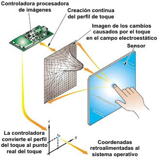

El monitor es la pantalla mediante la cual podemos interactuar con el computador, utilizando como vía otros periféricos para poder acceder a la información, o la búsqueda de la misma (como mouse, teclado, sonido, entre otros). Los componentes de un ordenador son muy importantes, ya que uno depende del otro para poder operar.
Es una válvula o tubo eléctrico en el que incide un haz de electrones sobre la superficie interna de la pantalla que está recubierta de un material fosforescente, análogamente a como se forman las imágenes en un televisor. Un campo electromagnético desplaza el haz de electrones de izquierda a derecha y de arriba hacia abajo y, dependiendo de la intensidad con la que inciden los electrones en la pantalla, así de brillante será cada punto generado. La imagen, para ser visualizada durante un determinado tiempo, debe ser repetida o refrescada periódicamente (al menos 25 veces por segundo). Estas pantallas se denominan pantallas de barrido. La continuidad de la imagen de la pantalla se forma por multitud de píxeles. La pantalla está dividida en celdas (mediante una rejilla metálica o si es tecnología Trinitron mediante unos alambres), en cada una de las cuales puede ir un carácter. La celda está constituida por una matriz regular de puntos de imagen.
La pantalla LCD está hecha de dos láminas de un material polarizador flexible y una capa de solución de cristal líquido entre las dos. En esta fina capa, las moléculas de cristal líquido se alinean entre dos sustratos de vidrio. En las superficies internas de cada uno de estos sustratos se encuentran electrodos que controlan los portadores de carga como electrones que luego interactúan con los cristales líquidos, creando un campo eléctrico que los atraviesa; esto, a su vez, puede cambiar la alineación de los cristales, cambiando también el comportamiento general de las moléculas. En los lados opuestos del sustrato, se utilizan polarizadores para controlar los niveles de paso de la luz, lo que afecta la imagen general de la pantalla. Una pantalla LCD no se actualiza como un monitor CRT . En cambio, se crea una imagen enviando electricidad a través de cristales líquidos que se desenroscan a la velocidad de la electricidad aplicada, creando 64 tonos.
La pantalla táctil es aquella que funciona mediante un toque directo sobre su superficie y permite la entrada de datos de datos y órdenes al dispositivo. A su vez muestra los resultados introducidos previamente; actuando como periférico de entrada y salida de datos, así como emulador de datos interinos erróneos al no tocarse efectivamente. Este tipo de pantallas son las más precisas que existen, ya que además de saber dónde hemos hecho la pulsación exacta, pueden conocer datos como la presión ejercida y la profundidad e intensidad de la pulsación.
Los colores usuales en una monocromática son el blanco , ámbar o verde.
El color de cada punto se obtiene con mezcla (RGB) de los colores rojo, verde y azul, pudiendo programar la intensidad de cada color básico.
Solo admiten caracteres
En las pantallas de caracteres, la memoria de imagen (que es específica o una parte de la memoria RAM) almacena la información correspondiente a cada celda (códigos de caracteres y sus atributos). En la memoria ROM están los patrones de los caracteres, representados como una matriz de puntos. Se denomina generador de caracteres a esta memoria de sólo lectura.
Permiten trazados de líneas y curvas continuas.
En las pantallas gráficas el usuario tiene acceso al punto de imagen, pudiendo representar en ellas imágenes configuradas no sólo con las formas de caracteres incluidos en la ROM. En este caso, la memoria de imagen contiene la información correspondiente a cada punto de imagen (intensidad, color y otros posibles atributos), en vez de la correspondiente a cada celda. Los dibujos, a pesar de estar formados por puntos de imagen presentan una apariencia de líneas continuas. La calidad de la pantalla gráfica depende de la densidad de puntos de imagen.
Un controlador o driver es el software o programa que permite al Sistema Operativo interactuar con un periférico y controlarlo, haciendo una abstracción del Hardware y proporcionando una interfaz posiblemente estandarizada para usarlo; por ejemplo, una tarjeta de vídeo o de sonido. Los controladores actúan como “puentes” entre las aplicaciones y los dispositivos, encargándose de que ambos interactúen.
La conexión con el módulo de E/S se realiza a través de señales de control, estado y datos. Es la parte del controlador que homologa su comportamiento singular al esquema general de gestión de la E/S. Las señales de control determinan la función que debe realizar el dispositivo.
La lógica de control asociada al dispositivo controla su operación en respuesta a las indicaciones del módulo de E/S. El transductor convierte las señales eléctricas asociadas a los datos a otra forma de energía. Además, suele existir un buffer asociado al transductor para almacenar temporalmente el dato que se transfiere entre el módulo de E/S y el dispositivo.
El controlador se encuentra dentro de la propia GPU acompañando al resto de aceleradores y coprocesadores de la misma como las unidades DMA, el códec de vídeo y muchos otros elementos importantes. Esto es debido a que accede a la misma memoria a la que accede la GPU, ya que necesita acceder al búfer de imagen para poder enviar la imagen a la interfaz de vídeo.
Los controladores tienen que ser compatibles con el sistema operativo. De este modo, una misma tarjeta de vídeo tendrá un driver para el supuesto de que el sistema operativo sea Windows XP, otro diferente para Windows 7 y otro diferente para Linux. Por esta circunstancia, y debido a la diversidad y volatilidad de la vigencia de los sistemas operativos, las compañías comercializadoras del hardware suelen poner a disposición de los usuarios, controladores actualizados y adaptados a los distintos sistemas operativos. La manera más habitual de obtener estos drivers es a través de Internet, en los sitios web de las empresas fabricantes. Una vez que se accede al espacio web de la compañía, en la zona de productos o descargas (download) bastará con indicar el tipo, nombre y versión del dispositivo para el que buscamos el controlador, así como el sistema operativo en el que habrá de funcionar e iniciar la transmisión del fichero hacia nuestro ordenador.
En el caso del monitor, el controlador permite que el monitor se comunique con el sistema operativo mediante el suministro de información de configuración en forma de un archivo INF. El funcionamiento del sistema utiliza este archivo para aplicar funciones y ajustes. El controlador de pantalla permite no solo varias resoluciones, sino interaccionar con diversos estándares de interfaz de vídeo y enviar señales de vídeo diferentes a distintas pantallas de manera sincronizada.
Los drivers de vídeo procesan las imágenes que se muestran en el monitor de tu PC. Toda la interfaz gráfica pasa por este tipo de drivers, que controlan todos los aspectos básicos y avanzados del vídeo. Estos controladores son bastante delicados, especialmente cuando se usan para programas complejos, como videojuegos. Pueden venir integrados con el monitor o con el instalador de la tarjeta de vídeo, variando minuciosamente entre modelos y marcas del componente.